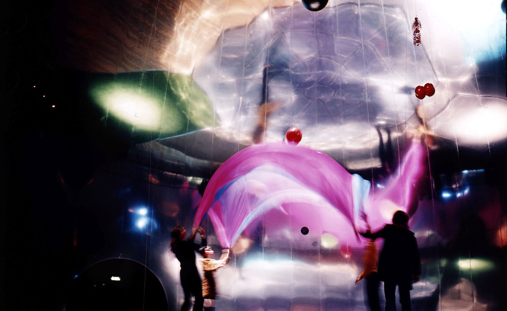
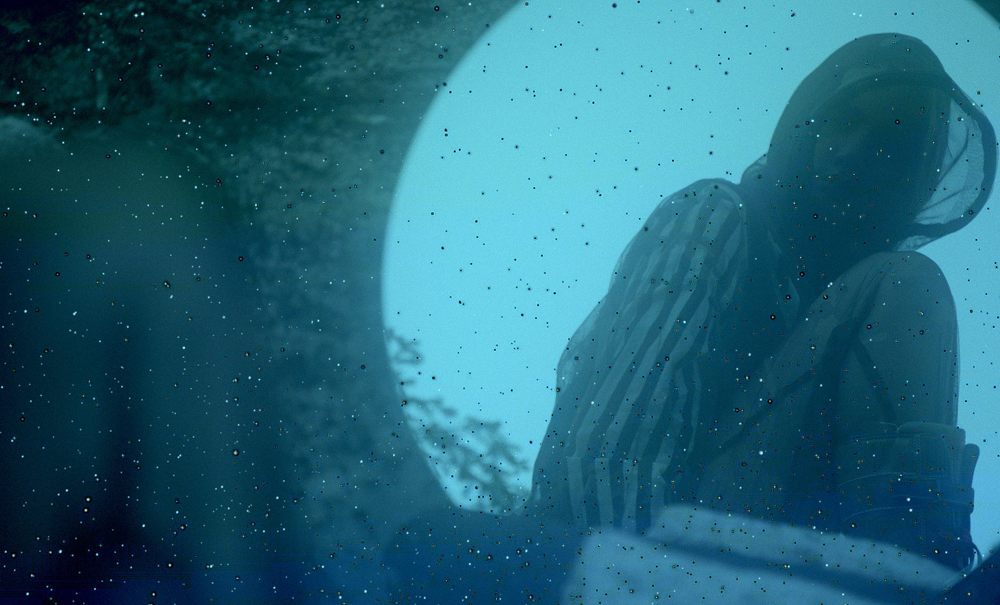

NEW UTOPIAS
EMERGED
Not a happy place, not an error, but a dystopian consensual hallucination. What in some years would become what we understand as Internet was first born out of gritty cyberpunk fiction, a cyberspace imagined as a trash fire in response to a trash fire. So how did this apocalyptic vision—written in the shadows of the Cold War and the coming nuclear annihilation—become utopian? The aspiration for a space of freedom, escape, and libertarian self-interest rises from individual voices of freedom that ultimately erased so many people. Dystopia created utopia, as utopia created dystopia. The juxtaposition of expectations on behalf of an immaterial space propelled us into an everlasting world of idealism.
[A] Chun, Wendy. 2021. Discriminating Data: Correlation, Neighborhoods, and the New Politics of Recognition.
[B] Crawford, Kate. 2021. Atlas of AI: Power, Politics, and the Planetary Costs of Artificial Intelligence.

E.A.T. The Pepsi Pavillion (1970), installation
by Fujiko Nakaya and Robert Breer
Redemption x ruin These dystopian and utopian discourses are metaphysical twins: one places its faith in AI, while the other fears AI. Whether AI is abstracted as an allpurpose tool or an all-powerful overlord, the result is technological determinism. AI takes the central position in society’s redemption or ruin. (...) Both the tech utopians and dystopians frame the problem with technology always at the center, inevitably expanding into every part of life.
[B]

Stills from the short film Information
Skies (2017), by Metahaven